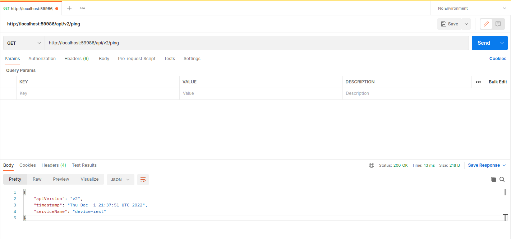
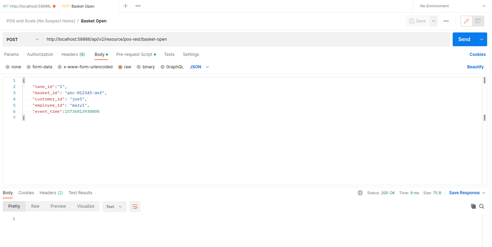

Phase 1 - Simulate Events
Overview
The Phase 1 steps in this guide show you how to use Postman to send events to device-rest to simulate a sensor fusion loss-detection system. To use this simulation, you will send POS Events, Scale Events, CV ROI Events, and RFID ROI Events as HTTP Post requests.
The concepts you will learn in this guide also apply to sending MQTT events to device-mqtt.
Note
MQTT.fx is a useful tool for composing MQTT events for testing and simulation.
Scenario
The scenario you will complete is to:
- Open a basket
- Scan one POS item
- Close the transaction
For each operation the expected successes and failures are as follows:
Success
Response Status Code 200 OK. The event-reconciler docker logs show the event being processed.
Failure
Response Status Code 404 or no response The event-reconciler docker logs show an error while processing the event, or no events are in the event-reconciler logs
Getting Started
- Install Postman.
- Complete steps 1-4 in Getting Started.
- Make sure the containers are all up and running.
- Open the docker logs in a terminal window. This lets you make sure checkout events are processed correctly. To open the docker logs:
docker logs -f event-reconciler
Continue to the next section to start using Postman to create a simulated scenario. As an alternative to Postman, you can use the Event Simulator to test and explore the example reference design.
Confirm device-rest is online
- Open Postman.
- Send an HTTP GET request to http://localhost:59986/api/v2/ping to test the device-rest operation. This makes sure the service is online.

Success
You see the version number of the service returned and a status code of 200.
Failure
If you get a Response Status Code 404 or get no response, make sure you correctly built and ran device-rest, according to the instructions in step 3 of Getting Started. Do not continue until you successfully receive a status code of '200'
You are ready to initiate your first transaction.
Initiate a transaction
basket-open send a POST request to http://localhost:59986/api/v2/resource/pos-rest/basket-open with body:
{
"lane_id":"1",
"basket_id": "abc-012345-def",
"customer_id": "joe5",
"employee_id": "mary1",
"event_time":15736013930000
}

Scan an item
scanned-item send a POST request to http://localhost:59986/api/v2/resource/pos-rest/scanned-item with body:
{
"lane_id":"1",
"basket_id": "abc-012345-def",
"product_id": "00000000571111",
"product_id_type": "UPC",
"product_name": "Trail Mix",
"quantity": 1,
"quantity_unit": "EA",
"unit_price": 5.99,
"customer_id": "joe5",
"employee_id": "mary1",
"event_time":15736013940000
}
Prepare for payment
payment-start send a POST request to http://localhost:59986/api/v2/resource/pos-rest/payment-start with body:
{
"lane_id":"1",
"basket_id": "abc-012345-def",
"customer_id": "joe5",
"employee_id": "mary1",
"event_time":15736013950000
}
Payment succeeded
payment-success send a POST request to http://localhost:59986/api/v2/resource/pos-rest/payment-success with body:
{
"lane_id":"1",
"basket_id": "abc-012345-def",
"customer_id": "joe5",
"employee_id": "mary1",
"event_time":15736013960000
}
Transaction is closed
basket-close send a POST request to http://localhost:59986/api/v2/resource/pos-rest/basket-close with body:
{
"lane_id":"1",
"basket_id": "abc-012345-def",
"customer_id": "joe5",
"employee_id": "mary1",
"event_time":15736013970000
}
You have successfully created a simulated scenario with the POS. Next, you will use Postman Collections to explore more complicated scenarios.
Using Postman Collections
Instead of manually making HTTP calls for each event, Intel provides several full scenarios as Postman Collections. These collections test different sensor combinations, various products, and customer behaviors. You can include and build on the Postman Collections to:
- Understand the reference solution
- Generate simulated data to test or improve the reconciliation algorithm
- Simulate one or more device(s) so your own device can run alongside other simulated devices
- Perform testing and validation
To use the Postman Collections:
- Open Postman.
- Click 'Import'.
- Click 'Choose Files'.
- Select the included collections.
- After the import completes, mouse over the collection you want to run and click 'play'.
- Click 'run' to open the Collection Runner.
- Click 'Run ...' to start the simulated transaction.


Success
In the event-reconciler logs, the result of running a non-suspect collection is No suspect items detected. The result of running a collection that contains suspect items is a json message containing the suspect lists.
{
"cv_suspect_list": [...],
"rfid_suspect_list": [...],
"scale_suspect_list": { ... }
}
Summary
You have successfully created a simulated reference design containing multiple sensors. Your next step is to integrate your own components to create your own Real Time Sensor Fusion for Loss Detection at Checkout solution.